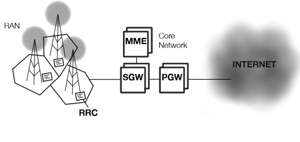
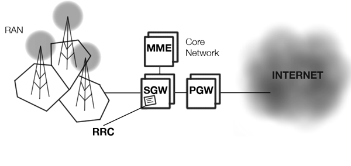
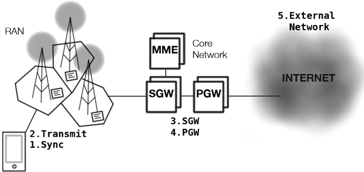
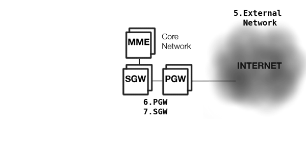

Travelling Through Pipes and Flying Through the Air;
the mobile network and the need for Offline
Natasha Rooney - @thisNatasha
Why do we care?
WiFi
Mobile Networks
And all of these:
HTTP, TCP, HTTPS, TLS, XHR Reqests, HTTP2, UDP...
Mobile Networks
&
Dealing with cruddy connetions
(old APIs, new APIs, super cool ultra new APIs)
3G |
4G |
|
|---|---|---|
| Data Throughput | Up to 3.1Mbps with an average speed range between 0.5 to 1.5 Mbps | Practically speaking, 2 to 12 Mbps (Telstra in Australia claims up to 40 Mbps) but potential estimated at a range of 100 to 300 Mbps. |
| Peak Upload Rate | 5 Mbps | 500 Mbps |
| Peak Download Rate | 100 Mbps | 1 Gbps |
| Switching Technique | packet switching | packet switching, message switching |
| Network Architecture | Wide Area Cell Based | Integration of wireless LAN and Wide area. |
| Services And Applications | CDMA 2000, UMTS, EDGE etc | Wimax2 and LTE-Advance |
| Forward error correction (FEC) | 3G uses Turbo codes for error correction. | Concatenated codes are used for error corrections in 4G. |
| Frequency Band | 1.8 – 2.5 GHz | 2 – 8 GHz |
4G Requirements
- All-IP packet switched network
- Peak data rates: <100 Mbit/s (high mobility)
- Peak data rates: <1 Gbit/s (low mobility)
- Dynamically share network resources
- Scalable channel bandwidths: 5–20 MHz
- Peak link spectral efficiency: 15 bit/s/Hz (downlink), 6.75 bit/s/Hz (uplink)
- System spectral efficiency: <3 bit/s/Hz/cell (downlink), 2.25 bit/s/Hz/(indoor usage)
- Smooth heterogeneous networks handovers
- Support next generation multimedia.
1. I’m not always on 4G
2. 3G is still the most popular
by a long way
LTE in the UK?
93,211 connections
3G in the UK?
49,013,306 connections
source: GSMA Intelligence
Answer: Support Everything!
3G, LTE, 2G, Pigeon (maybe not pigeon)...
The Network
Radio Resource Controller
Radio Resource Controller
Making a Request
Making a Request
Making a Request
Making a Request
Making a Request

Making a Request
Making a Request
Making a Request
Making a Request
Latencies
Some Guidelines
- send larger data, fewer times
- send data when radio is on
- avoid polling (more later!)
- refrain from keep-alives.
- design for the worst connection
- anticipate latency
Can HTML5 APIs help?
navigator.onLine
var x = "Is the browser online? " + navigator.onLine;
document.getElementById("demo").innerHTML = x;
navigator.onLine
navigator.onLine
navigator.onLine
Network Information API
Originally: "Exposes the current connection type. The value returned is one of the following strings, case-sensitively: unknown, ethernet, wifi, 2g, 3g, 4g, none.""
LTE 50-70 Mbps
(comparable to some WiFi networks)
Network Information API v2
//onchange event
navigator.connection.addEventListener('change', show, false);
//get bandwidth
if (navigator.connection.bandwidth > 2) {
i.src = "http://example.com/pony_hd.png";
} else {
i.src = "http://example.com/pony_ld.png";
}
"change is the only constant in mobile networks"
Minimise Polling
But I can't use push...
Server-Sent Events
Push API
Server-Sent Events
// Connect to server, listen for messages, manage data:
var source = new EventSource('/stats');
source.onopen = function () {
connectionOpen(true);
};
source.onerror = function () {
connectionOpen(false);
};
source.addEventListener('connections', updateConnections,false);
source.addEventListener('requests', updateRequests, false);
source.addEventListener('uptime', updateUptime, false);
source.onmessage = function (event) {
// a message without a type was fired
};
Push API
(W3C Working Draft)
//register
function registerPush() {
navigator.push.register().then(
function(value) {
pushRegistrations.push(value);
registerWithAppServer(value);
},
function(reason) {alert("error: "+ reason);}
);
}
//handler
navigator.setMessageHandler("push", gotPush);
//manage the message
function gotPush(message) {
//do stuff
}
source: http://www.w3.org/TR/push-api/
Offline
Native App Win?
App Cache
//register
CACHE MANIFEST
# 2013-10-22:v1
# Explicitly cached
CACHE:
/offlineanime/anime.json
/offlineanime/app/css/app.css
/offlineanime/app/img/404.png
/offlineanime/app/lib/angular/angular.js
/offlineanime/app/lib/angular/angular-route.js
/offlineanime/app/js/controllers.js
/offlineanime/app/js/app.js
/offlineanime/app/partials/anime-list.html
/offlineanime/app/partials/anime-detail.html
# Resources that require the user to be online.
NETWORK:
# Don't actually need other URLs because * covers them
# Needed * for ajax requests
*
FALLBACK:
http://static.hummingbird.me /offlineanime/app/img/404.png #doesn't work!
App Cache NIGHTMARES
- AppCache wasn't loading
(Solved by editing http.conf) - EVERYTHING BROKE!
(Solved by declaring everything) - XHR requests stopped working
(Solved by adding * to Network in Appcache file for some weird reason) - Nasty image placeholders when offline
(Solved by nasty image error hack) - Debugging became an difficult
(Solved only by more beer.)
Service Worker!
Service Worker Can:
- manage caches
- listen for network events (e.g. resource requests)
- decide what content to display
Multiple Caches
Cache Info
(What is cached? How hold are they? Is an update available?)
Multiple Fallbacks
(Based on Promises)
ServiceWorker: Caching
this.addEventListener("install", function(e) {
//Create a cache of resources. Begins the process of fetching them.
var shellResources = new Cache(
"/app.html",
"/assets/v1/base.css",
"/assets/v1/app.js",
"/assets/v1/logo.png",
"/assets/v1/intro_video.webm",
);
//Add Cache to the global so it can be used later during onfetch
caches.set("shell-v1", shellResources);
//The coast is only clear when all the resources are ready.
e.waitUntil(shellResources.ready());
});
this.addEventListener("fetch", function(e) {
//No "onfetch" events are dispatched to the ServiceWorker
//until it successfully installs.
//All operations on caches are async, including matching URLs, so we use
//Promises heavily. e.respondWith() even takes Promises to enable this:
e.respondWith(caches.match(e.request.url, "shell-v1"));
});
source: https://github.com/slightlyoff/ServiceWorker/blob/master/explainer.md
ServiceWorker: Fallbacks
this.addEventListener("fetch", function(e) {
var url = e.request.url;
if (url == inventory) {
e.respondWith(
fetch(url).then(
null,
function() { return caches.match(fallbackInventory); }
)
);
}
});
source: https://github.com/slightlyoff/ServiceWorker/blob/master/explainer.md
ServiceWorker: Rules
(just a few)
So, Mobile Network?
- understand the mobile network
- latencies
- some guidelines
- design for the worst connection
- use push instead of polling
- bigger bursts
- HTML5 APIs including offline
Thank-you
Especially:
Ilya Grigorik (@igrigorik), Jake Archibald (@jaffathecake), Alex Russell (@slightlylate),
GSMA Intelligence, W3C WebApps, SysApps, DeviceApps WGs, W3C Webmob IG
Read Ilya's Book! "High Performance Browser Networking"